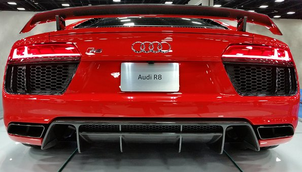

Flex Images


Audi AG (German: [ˈaʊ̯di ʔaːˈɡeː] (listen)) is a German automotive manufacturer of luxury vehicles headquartered in Ingolstadt, Bavaria, Germany. As a subsidiary of its parent company, the Volkswagen Group, Audi produces vehicles in nine production facilities worldwide.The origins of the company are complex, going back to the early 20th century and the initial enterprises (Horch and the Audiwerke) founded by engineer August Horch (1868–1951); and two other manufacturers (DKW and Wanderer),leading to the foundation of Auto Union in 1932. The modern Audi era began in the 1960s, when Auto Union was acquired by Volkswagen from Daimler-Benz.[9] After relaunching the Audi brand with the 1965 introduction of the Audi F103 series, Volkswagen merged Auto Union with NSU Motorenwerke in 1969, thus creating the present-day form of the company.The company name is based on the Latin translation of the surname of the founder, August Horch. Horch, meaning "listen", becomes audi in Latin. The four rings of the Audi logo each represent one of four car companies that banded together to create Audi's predecessor company, Auto Union. Audi's slogan is Vorsprung durch Technik, meaning "Being Ahead through Technology".[10] Audi, along with German brands BMW and Mercedes-Benz, is among the best-selling luxury automobile brands